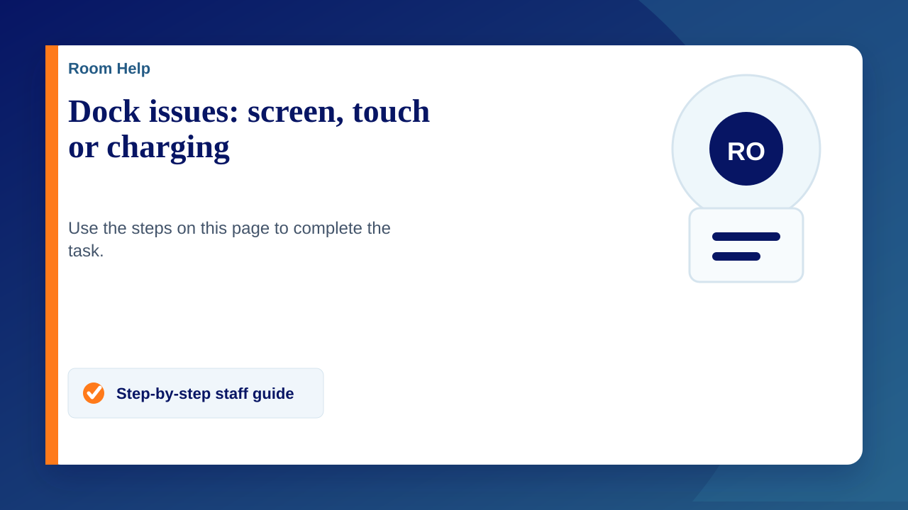
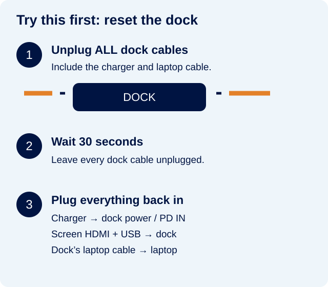
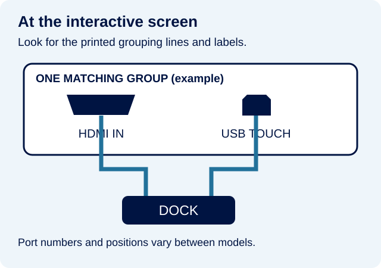

Screen blank, touch not working, or laptop not charging? Reset the dock first. This fixes most dock issues.
1. Reset the dock
The dock is the small box or adapter that connects your laptop to the room’s screen and cables.
- Unplug every cable from the dock — including the laptop cable, charger, HDMI, USB and any other cables. Leave the screen ends in place.
- Wait 30 seconds with all dock cables unplugged.
- Plug the laptop charger into the dock’s power input (often labelled PD IN or Power). Make sure the charger is connected to a switched-on wall socket.
- Reconnect the screen cables and any other cables to the dock. Most rooms have an HDMI cable for the picture and a USB cable for touch.
- Reconnect the dock to your laptop, wait a few moments, then check the picture, touch and charging.

2. Still having a problem?
No picture / “No signal”
- Check the screen is switched on and your laptop is awake.
- Check the HDMI cable is firmly connected at both ends.
- On the screen, select the HDMI input used by the cable (for example, HDMI 1).
- If the picture appears but is different from your laptop, follow Changing display settings.
Picture works, but touch does not
- Check the separate USB touch cable is connected to the dock and the screen’s TOUCH port. HDMI alone does not carry touch.
- At the screen, the HDMI and USB touch cables must use the same matching group. On ViewSonic screens, look for the printed lines grouping the ports together.
- Follow the labels on your screen: the port numbers and groups differ between models. A general USB socket may not be the touch connection.

ViewSonic’s connection guide and image (IFP50-5 example). Open the manufacturer’s connection image.
Picture works, but there is no sound
Choose the screen or room speakers as your sound output. Follow No sound from the classroom screen for Windows and Chromebook steps.
Laptop is not charging
- Check the laptop charger is plugged into the dock’s power / PD IN socket, and the wall socket is switched on.
- Check the dock’s laptop cable is firmly connected to your laptop.
- If it still will not charge, plug the charger directly into your laptop to check whether it charges that way.
3. Still stuck? Contact IT
Submit a support ticket with the room name, whether picture, touch or charging is affected, and whether you tried the 30-second reset. If charging is affected, mention whether charging directly worked. A photo of the dock and screen connections helps.